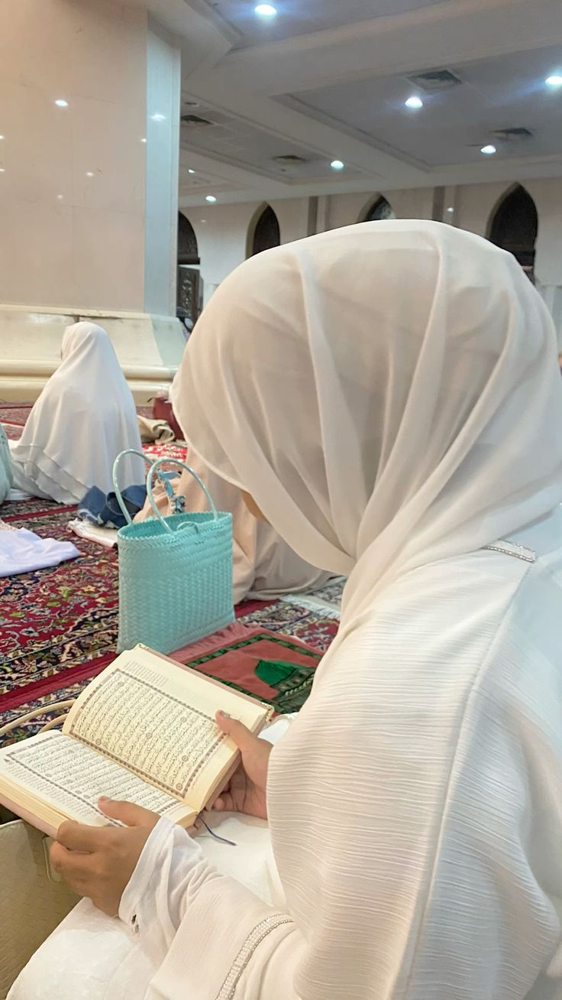
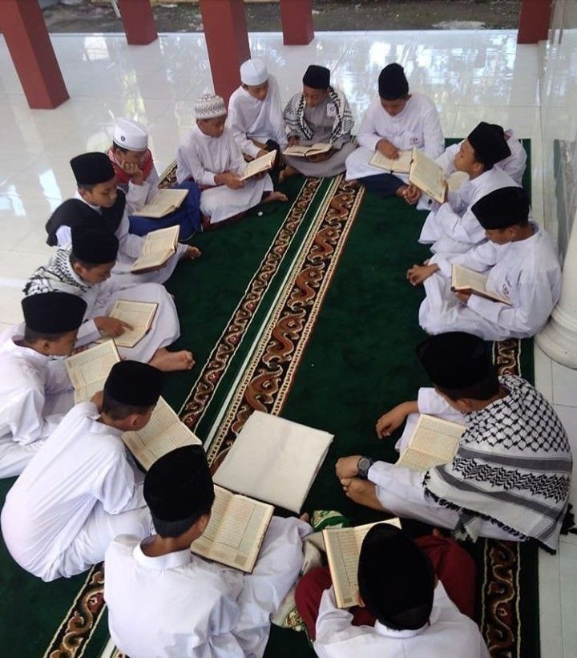
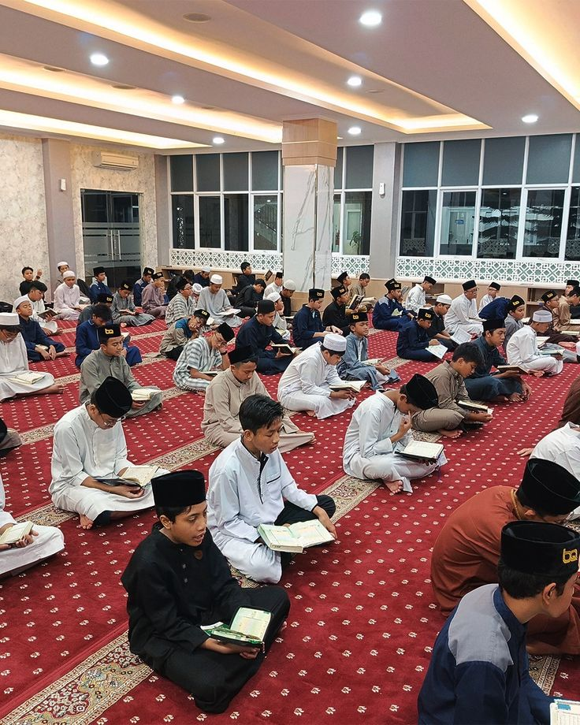

Personal Learning
Perjalanan Al-Qur'an masing-masing pengguna.
Open HereRead the Ayat, Discover the Meaning, Live the Guidance — Baca ayatnya, temukan maknanya, dan hidupkan petunjuknya.
وَلَدَارُ الْآخِرَةِ خَيْرٌ
“And indeed the land of the afterlife will definitely be better”
{16:30}


AyatIfy hadir sebagai jembatan antara kemajuan teknologi dan keluhuran budaya pesantren. Dengan menjunjung tinggi nilai-nilai keilmuan, adab, dan tradisi mengaji, AyatIfy berupaya menghadirkan pengalaman belajar Al-Qur'an yang lebih modern, interaktif, dan mudah diakses tanpa meninggalkan esensi pendidikan pesantren. Sebuah ruang digital bagi santri dan generasi Muslim untuk terus belajar, menghafal, serta mengamalkan nilai-nilai Al-Qur'an dalam kehidupan sehari-hari. 🤍
AyatIfy punya tiga pengalaman utama: belajar sendiri, bertumbuh bersama, dan dibimbing oleh orang yang tepat.
Atur pembelajaran sesuai kebutuhan dan kecepatanmu.
Belajar dan murajaah bersama agar tetap semangat.
Dapatkan arahan mentor untuk menjaga langkah belajar.
Pantau pencapaian dan perkembanganmu dari waktu ke waktu.
Bangun kebiasaan belajar melalui target yang terjaga.
Gunakan refleksi untuk terus memperbaiki proses belajarmu.
Temukan cara Anda untuk mempelajari Al-Qur'an, baik secara mandiri, bersama kelompok, maupun dengan bimbingan seorang mentor.
Buat target pembelajaran pribadi Anda, kelola hafalan Anda, dan bangun kebiasaan yang konsisten.
Pantau perkembangan Anda, rayakan pencapaian, dan perkuat hubungan Anda dengan Al-Qur'an.